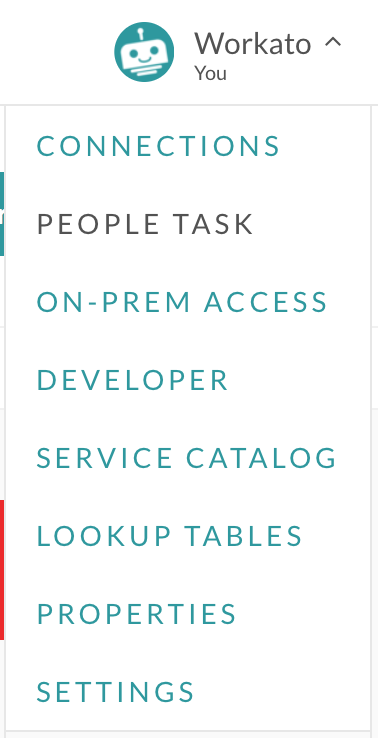
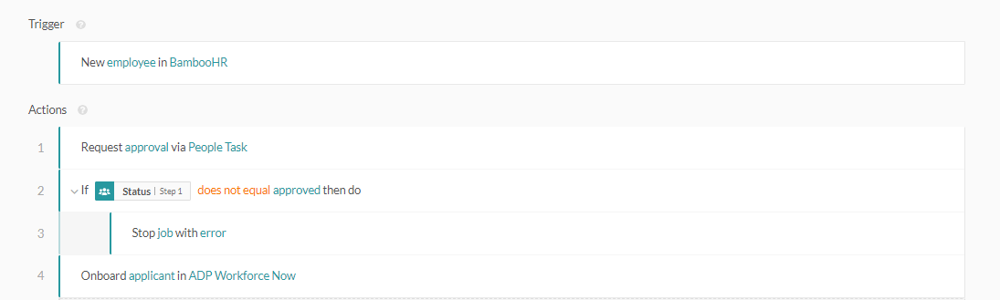
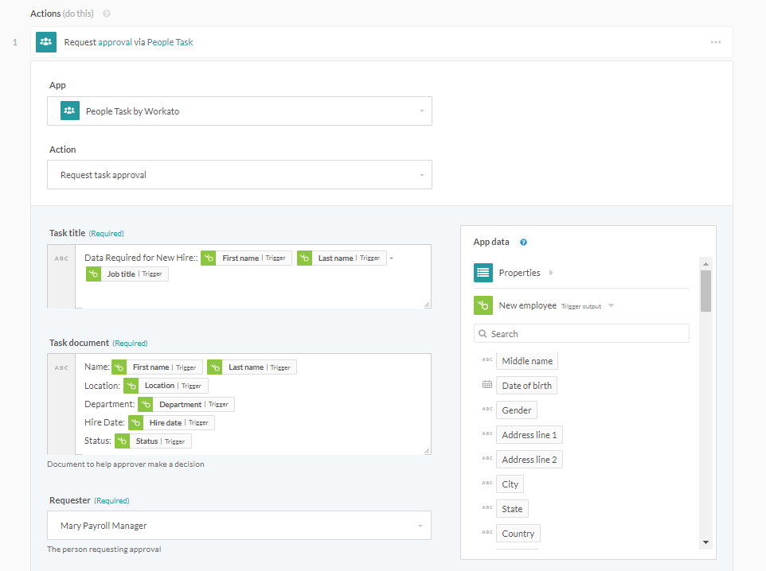
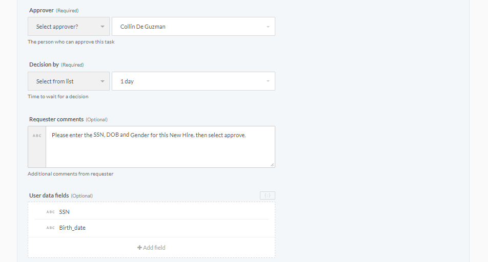
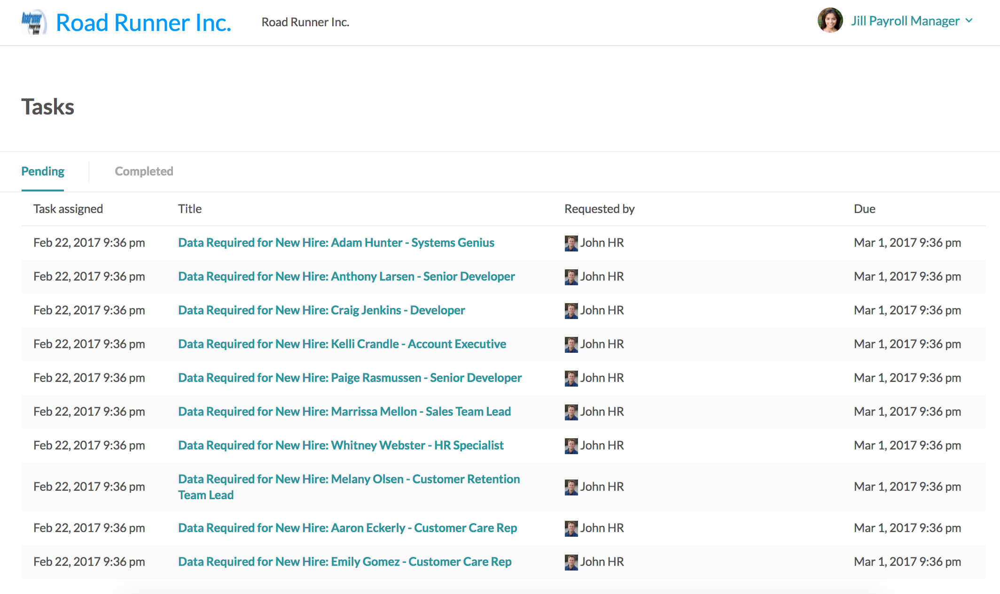

People Task (Workflow)
The people task feature enables the addition of human approval steps within the recipe. Complex tasks requiring human judgement can be directed to an approver, then subsequently redirected based on whether the task was approved or rejected.
Using People Task as an admin
People Task setup
People Task feature is enabled only for certain plans. Check the Pricing and Plans page or reach out to Workato sales representatives at +1 (844) 469-6752 to find out more.
For Workato accounts with People Task feature enabled, team owners are able to view the People Task option on their account menu.

Peopletask menu option
Customize People Task subdomain
If accessing People Task for the first time, the People Task account needs to be configured. Provide a unique subdomain and customize the site for People Task approvers.
The following portrays the configuration for Road Runner Inc. in the People Task setup screen. This configuration can be changed after the initial setup.

Configure and customize People Task site
Correspondingly, the People Task login page will show up as configured in the setup screen.

Customized People Task login page for People Task requesters and approvers
Adding People Task participants
Task requesters and approvers should be added as People Task particpants. Provide their names, emails and optionally provide an avatar for them.

Adding People Task participants
People Task example scenario
Recipe
The following recipe triggers on new hires in BambooHR and sends a People Task approval task from John in HR to Jill the payroll manager. An email notification should be sent to Jill to inform her about the new task pending her approval.

Recipe that uses People Task to approve and add sensitive data about new hires
If the task was approved, the recipe proceeds to stage the new hire's details for uploading into ADP. If the task does not get approved, however, the recipe would stop with an error to flag this particular job for troubleshooting - as all new hires should get recorded in ADP.
People Task step configuration
In the People Task step, there are several fields to take note of.

People Task action fields configuration
The following are stills of the same fields:
 
People Task action fields configuration
Fields:
- Task title
Title of the task, as viewed from the summary list of tasks.
- Task document
Presented as a table of relevant data for the approver in deciding whether or approve or reject the task.
- Requester
Select the user sending the task from a list of users.
- Approver
Select the user approving the task from a list of users.
- Decision by
Select the number of days the approver has to make a decision.
- Requester comments
Optional notes from the requester to the approver.
- User data fields
Optionally used when the requester wishes the approver to provide additional data. Fields to collect should be defined in the following format.
[
{"name":"ssn","control_type": "ssn","label": "SSN", "hint": "nnn-nn-nnnn"},
{"name":"birth_date","type": "date_time", "control_type":"text","format":"MM-DD-YYYY", "hint":"MM-DD-YYYY"},
{"name":"gender","control_type":"select","pick_list":[["Male", "M"],["Female", "F"]]}
]
People Task step preview
From the approver's view, these fields will show up in the task as follows.


Preview of how People Task requests shows up for approvers
Using People Task as an approver
Approver view
The approver has to login to the People Task portal to view the tasks pending their approval.
Customized People Task login page for People Task requesters and approvers
Once logged in, the approver has access to the list of pending and completed tasks.

List of requests that approver has to review and approve/disapprove
Approving tasks
As the approver, review the document sent and provide any data requested by filling in the fields. Required fields would be marked as such. All tasks will provide the approver with the option of adding an Approver note.
Subsequently, approve or reject the task. The recipe will resume the job to carry out further recipe steps.

Filling in required fields and approving request
Once a task has been approved or rejected, it can be found within the Completed tab.

Approved request moves to Completed tab